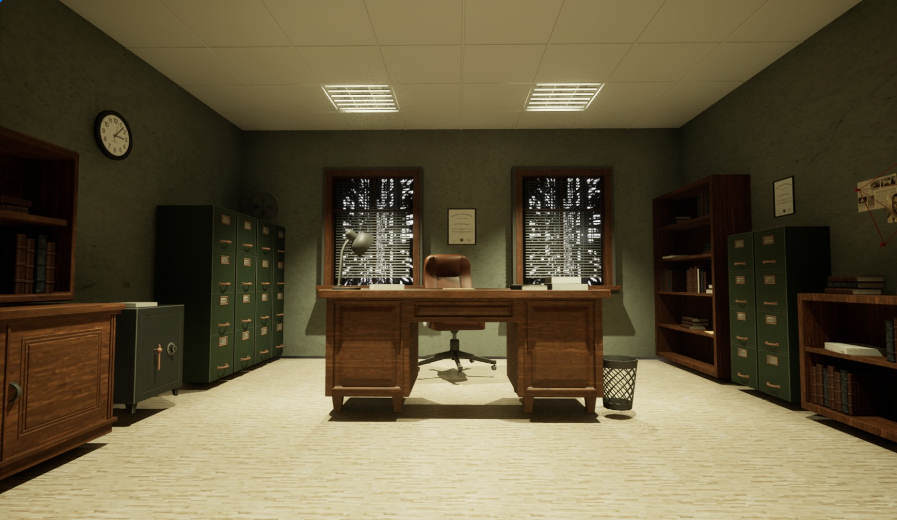
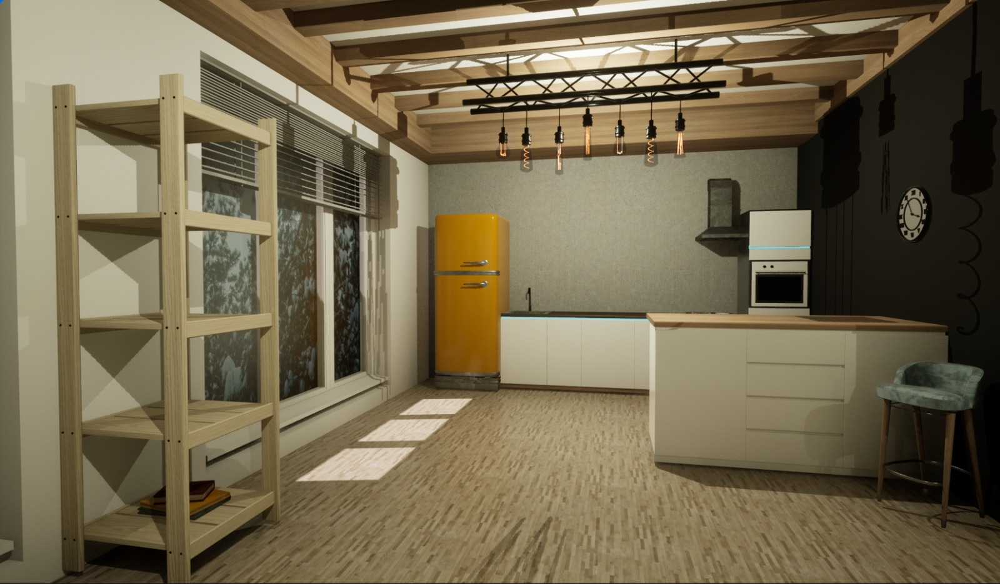
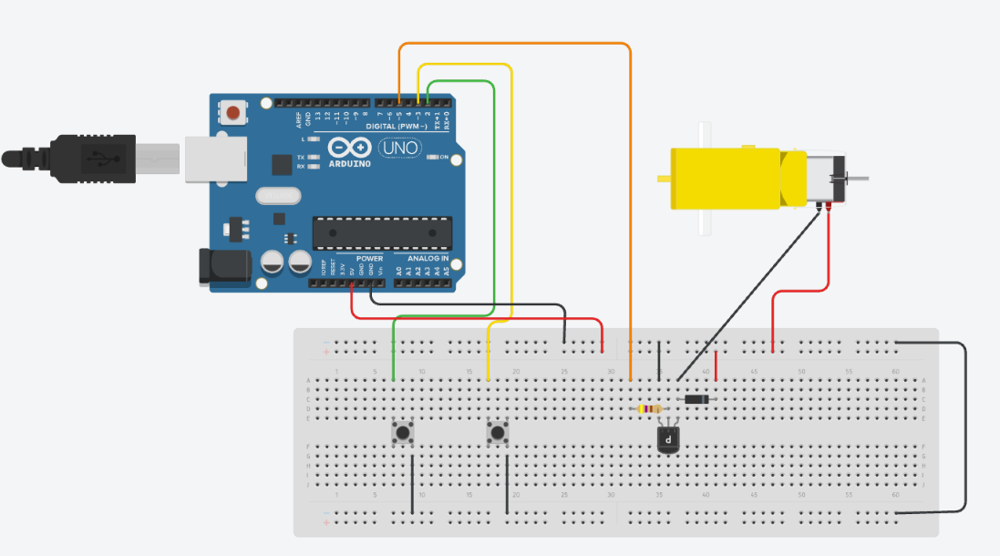

Simulador de Combate a Fuego en Interiores: practica en casa u oficina, de forma segura, con un extintor háptico que realmente puedes sostener.
Conocer el simuladorVer el extintor hápticoSomos una empresa que capacita a las personas para enfrentar situaciones que pueden ser peligrosas en la vida diaria. Usamos realidad virtual para practicar en un entorno seguro, donde equivocarse no cuesta nada, y estar preparado puede cambiarlo todo.
La seguridad de las personas es el centro de todo lo que diseñamos.
Experiencias fáciles de entender, pensadas para toda la familia.
Realidad virtual y dispositivos físicos para aprender haciendo.
Dos escenarios realistas hechos en Unreal Engine 5, con dificultad progresiva. Primero aprendes, luego lo pones a prueba.
Una oficina pequeña donde puedes combatir el fuego con facilidad mientras conoces los controles y el extintor.
El interior de una casa: un espacio más grande donde apagar el incendio es más complejo y hay que moverse y decidir.


Para darle más inmersión a la simulación construimos un extintor portátil con Arduino UNO y materiales reciclados. Tiene seguro, palanca y vibra cuando lo accionas.

El motor solo se enciende si el seguro está activo y el botón está presionado, igual que un extintor real. Incluye antirrebote (40 ms), potencia limitada al ~90 % y un monitor serial para revisar el estado.
const int botonEncender = 2;
const int botonSeguro = 3;
const int motor = 9;
const int POTENCIA_MOTOR = 230;
bool seguroActivo = false;
int ultimaLecturaSeguro = HIGH;
int estadoSeguro = HIGH;
unsigned long ultimoCambio = 0;
const unsigned long tiempoRebote = 40;
unsigned long ultimoMensaje = 0;
const unsigned long intervaloMensaje = 200;
void setup() {
Serial.begin(9600);
pinMode(botonEncender, INPUT_PULLUP);
pinMode(botonSeguro, INPUT_PULLUP);
pinMode(motor, OUTPUT);
analogWrite(motor, 0); // motor apagado al inicio
}
void loop() {
// botón de seguro
int lecturaSeguro = digitalRead(botonSeguro);
if (lecturaSeguro != ultimaLecturaSeguro) {
ultimoCambio = millis();
ultimaLecturaSeguro = lecturaSeguro;
}
if (millis() - ultimoCambio >= tiempoRebote) {
if (lecturaSeguro != estadoSeguro) {
estadoSeguro = lecturaSeguro;
if (estadoSeguro == LOW) {
seguroActivo = !seguroActivo; // alterna el estado del seguro
}
}
}
// botón de encendido
int lecturaEncender = digitalRead(botonEncender);
// limitar la potencia del motor
bool motorEncendido = (seguroActivo && lecturaEncender == LOW);
analogWrite(motor, motorEncendido ? POTENCIA_MOTOR : 0);
// monitor serial
if (millis() - ultimoMensaje >= intervaloMensaje) {
ultimoMensaje = millis();
Serial.print("Seguro: ");
Serial.print(seguroActivo ? "ACTIVADO" : "DESACTIVADO");
Serial.print(" | Encendido: ");
Serial.print(lecturaEncender);
Serial.print(" | Motor: ");
Serial.println(motorEncendido ? "ENCENDIDO" : "APAGADO");
}
}
Cocina, taller, bodega y lugares públicos, con distintos tipos de fuego.
Puntaje, tiempo de respuesta y retroalimentación al terminar.
Sensores de movimiento, sonido y un retroceso más realista.
Sismos, primeros auxilios y fugas de gas.
¿Quieres probar el simulador o saber más? Escríbenos.
endeavorVR@lolqmal.com
https://x.com/EndeavorVR
Jonathan Galindo, Patricia Méndez, Alex Gaytán, Ángelito Salazar, Miguel Alvarez.